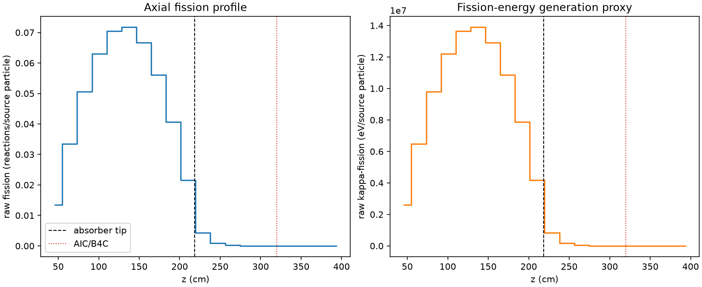
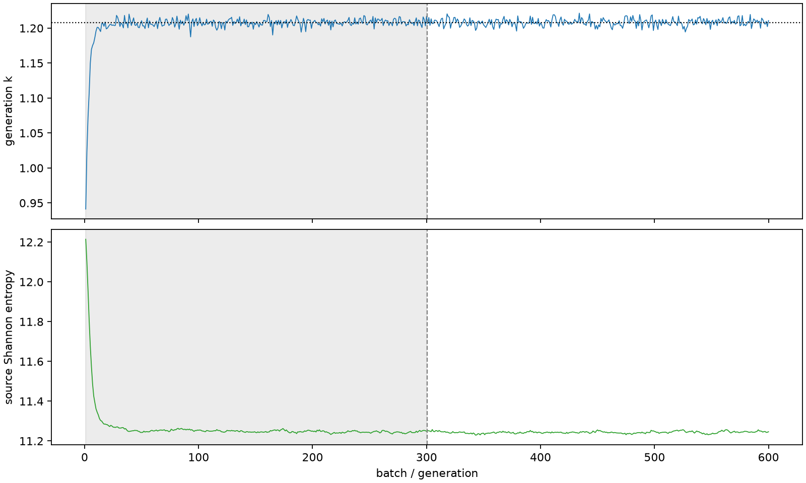

| field | value |
|---|---|
| experiment | V2-STAGE_256_OGRENCI_02-0002 |
| k | 1.2081481795387734 |
| MC standard error | 0.00018616199517246308 |
| seconds | 1031.3420243860019 |
| acceptance | not_assessed |
| convergence | review_required |
Completed is output integrity only; physical and statistical review required. Zero tallies do not prove zero production or zero uncertainty.
| diagnostic | value |
|---|---|
| geometric fuel voxels | 5280 |
| zero fission tally voxels | 802 |
| low signal fuel voxels | 1760 |
| low signal fission share | 8.254007841553801e-05 |
| low signal kappa share | 8.257264025589341e-05 |
| important fission share | 0.9500118311933964 |
| previous filter included | 3520 |
| duration estimate s | 1562.5173488400023 |
| actual minus estimate s | -531.1753244540005 |
| fission relative MC error | statistics |
|---|---|
| all_geometric_fuel | {"voxels": 5280, "positive_mean_voxels": 4478, "zero_mean_voxels": 802, "undefined_relative_error_voxels": 802, "median": 0.010398169405230629, "p95": 0.8911300505492309, "maximum": 1.0000000000000002} |
| low_signal | {"voxels": 1760, "positive_mean_voxels": 958, "zero_mean_voxels": 802, "undefined_relative_error_voxels": 802, "median": 0.5617065318862802, "p95": 1.0, "maximum": 1.0000000000000002} |
| important_95pct | {"voxels": 2304, "positive_mean_voxels": 2304, "zero_mean_voxels": 0, "undefined_relative_error_voxels": 0, "median": 0.0065566058762426705, "p95": 0.010147042724418801, "maximum": 0.011966356833102206} |
| outside_previous_filter | {"voxels": 1760, "positive_mean_voxels": 958, "zero_mean_voxels": 802, "undefined_relative_error_voxels": 802, "median": 0.5617065318862802, "p95": 1.0, "maximum": 1.0000000000000002} |
| kappa_fission relative MC error | statistics |
|---|---|
| all_geometric_fuel | {"voxels": 5280, "positive_mean_voxels": 4478, "zero_mean_voxels": 802, "undefined_relative_error_voxels": 802, "median": 0.010386271186957242, "p95": 0.8911992840349762, "maximum": 1.0000000000000002} |
| low_signal | {"voxels": 1760, "positive_mean_voxels": 958, "zero_mean_voxels": 802, "undefined_relative_error_voxels": 802, "median": 0.5603511164136732, "p95": 1.0, "maximum": 1.0000000000000002} |
| important_95pct | {"voxels": 2304, "positive_mean_voxels": 2304, "zero_mean_voxels": 0, "undefined_relative_error_voxels": 0, "median": 0.006549286847739237, "p95": 0.010136203756229556, "maximum": 0.011953955193019089} |
| outside_previous_filter | {"voxels": 1760, "positive_mean_voxels": 958, "zero_mean_voxels": 802, "undefined_relative_error_voxels": 802, "median": 0.5603511164136732, "p95": 1.0, "maximum": 1.0000000000000002} |
| axial bin | fission share | kappa-fission share |
|---|---|---|
| 1 | 0.027262942401802697 | 0.02726413188504203 |
| 2 | 0.067919590871579 | 0.06791938226746476 |
| 3 | 0.10246738331905059 | 0.10246639379420615 |
| 4 | 0.12780377272798663 | 0.1278029705206996 |
| 5 | 0.1429415026480849 | 0.14294042533603882 |
| 6 | 0.145358985464952 | 0.14535791821076294 |
| 7 | 0.13524600080206792 | 0.1352451255672314 |
| 8 | 0.11359904502224528 | 0.11359839254258276 |
| 9 | 0.08244312753844099 | 0.08244265641204147 |
| 10 | 0.043817149457707455 | 0.04381764553796612 |
| 11 | 0.00877453946824464 | 0.008777964729414422 |
| 12 | 0.0018484905898612195 | 0.001849292556177623 |
| 13 | 0.0004038367078249767 | 0.00040402090480908383 |
| 14 | 9.018608834899012e-05 | 9.022332947776315e-05 |
| 15 | 1.8306936720572325e-05 | 1.8315191851883874e-05 |
| 16 | 4.121717527895979e-06 | 4.123129120007339e-06 |
| 17 | 9.435000099743427e-07 | 9.434256288309912e-07 |
| 18 | 7.209008292147385e-08 | 7.201469599986671e-08 |
| 19 | 2.6474613868374483e-09 | 2.6447885644045078e-09 |
| 20 | 0.0 | 0.0 |
Histories include the inactive-to-active transition at batch 300. kappa-fission approximates fission energy production, not total heat deposition.

